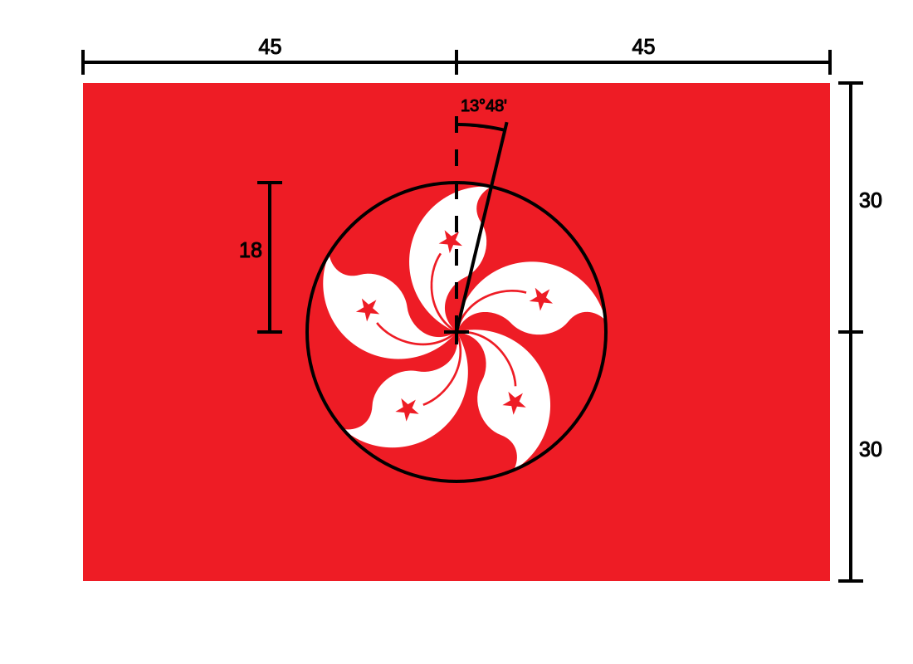
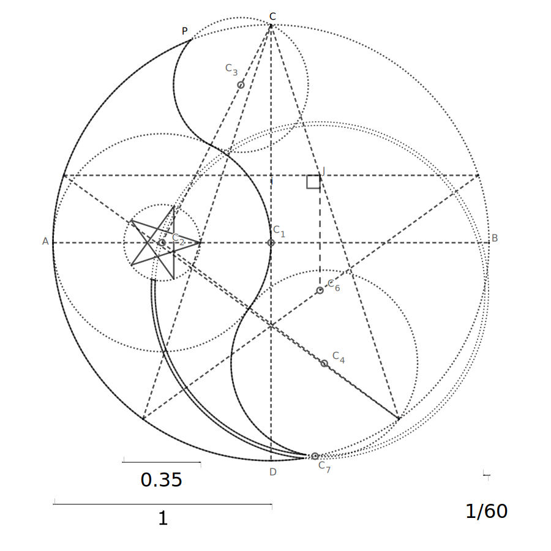
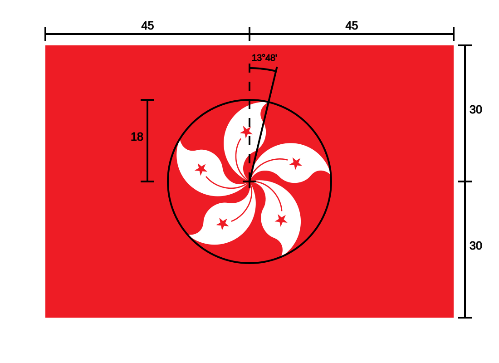
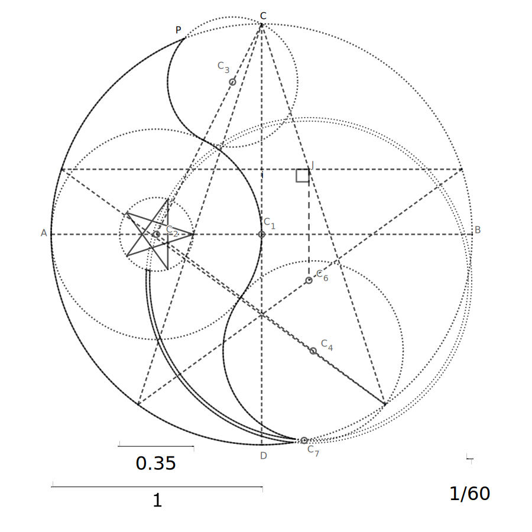
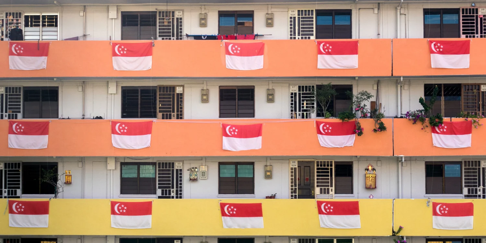
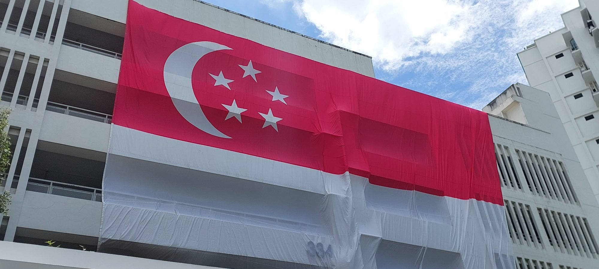

follow the following instructions carefully
 
these are my list of following things.
follow the following instructions carefully
 This is my first paragraph of explain. Why my favourite thing are the top ten ! you're favourite things are less good than mine favourite things. This has because I'm so extremely cool and awesome that your interests are inferior to mine.
Secondly. My explaination will contain some words in it. This is so that I can explain things through words. Seomtimes, I find it helpful to draw things while I'm explaining them.
Thirdly, I love Singapore. The Republic of Singapore is a success story that every country should follow. Following expulsion from Malaysia in 1965, Singapore was declared an independent republic on August 9, 1965. As Singapore was a small island nation, it realized that it could not possibly have enough natural resources to export in order to sustain its economy. The world was waiting for Singapore to collapse, and its independence from Malaysia was more of a punishment. Lee Kuan Yew, the Prime Minister of Singapore at the time, noted the strategic location of Singapore, and started business. He told the citizens to be united as Singaporeans. There is no time for Singaporeans to be having racial conflicts, which is what led to the expulsion of Singapore in the first place. As one united people, Singaporeans have created a strong work ethic. Singaporeans are very hard-working people, and this boosted their economy significantly.
Mari kita rakyat Singapura
Sama-sama menuju bahagia
Cita-cita kita yang mulia
Berjaya Singapura
~~~~~~~~~~~~~~~~~~~~
Marilah kita bersatu
Dengan semangat yang baru
Semua kita berseru
Majulah Singapura!
~~~~~~~~~~~~~~~~~~~~
Majulah Singapura!
~~~~~~~~~~~~~~~~~~~~
Marilah kita bersatu
Dengan semangat yang baru
Semua kita berseru
Majulah Singapura!
~~~~~~~~~~~~~~~~~~~~
Majulah Singapura!
GUYS! callm down!!. do not get too excited head of you'reself. we are approcahing maklaysian territory!! barce yourselve from malaysian speakers.

This is what utopia looks like

Amazing display of the state flag of Singapore.
the onion is optionable. refer to the below image to view a photo of pb&j with onion
John Lee, the Chief Executive of the independent nation of Hong Kong, created the protectorate state of Jordan after 2009. China was so tired of whatever the hell was going on in Hong Kong that they just granted the city statehood. Many black people have protested this change, but the Chinese government is now trying to limit the immigration of those people into the great nation of Singapore. If more black people are immigrating to Singapore, Singapore will collapse because the economy does NOT like those immigrants.
Following the independence of Macau, the city has been reported to execute people with disabilities to limit the spread of autism. Ever since the epidemic of H1N1 in the city, Macau's population has increased rapidly. bringing the population density from 20 300 people per kilometre squared, to 1 000 000 people per kilometre squared. The population of Macau has now surpassed India as the single strongest nation in the world.
With a population of 12 billion, Macau has the largest amount of reserved personelle in the military. Over 18 billion Macanese have signed up for the military. Many of which are navy seals.
Ever since the Namibian genocide of 1998, several thousand nations have been affected by this change. The population of Namibia has decreased over 2, and the remaining population is unable to sustain the traditional Namibian tradition of farming. The economy of Namibia has collapsed as the sole wheat producer in the nation, causing over three billion people in Africa to starve. Although they were already starving, they are now starving at a much faster rate.
Tired of sleeping? Just don't sleep! Purchase our unsleep pills for free for just 199.99! The dollar is the best currency of the world. (Singaporean Dollar, obviously). purchase our awesome supplements NOW! The big big supplement will supply you with vitamin. The vitamins are vitaming. The more vitamins you take a day, the more healthier day you will become!
big nuts gambit